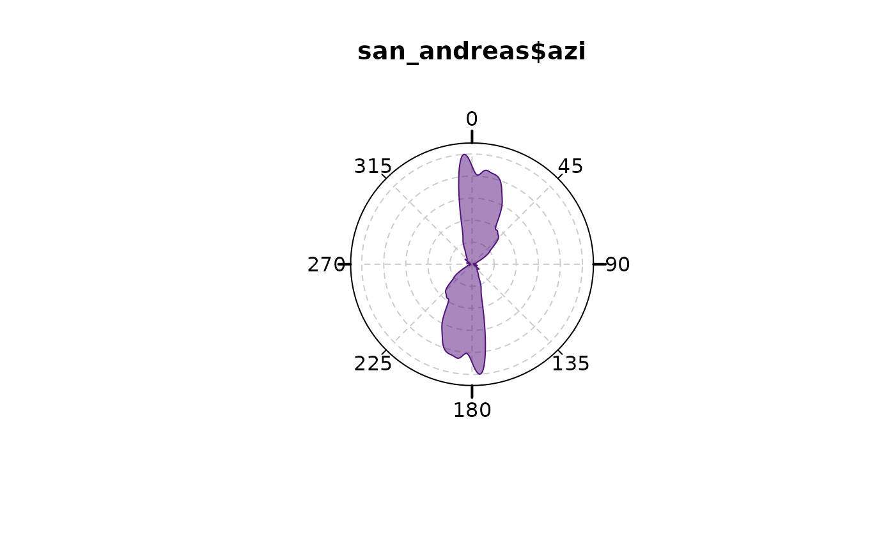
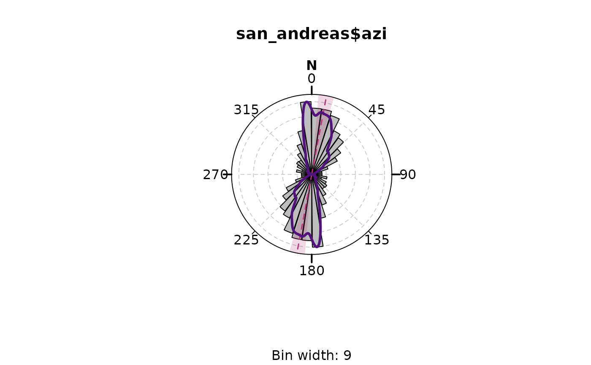
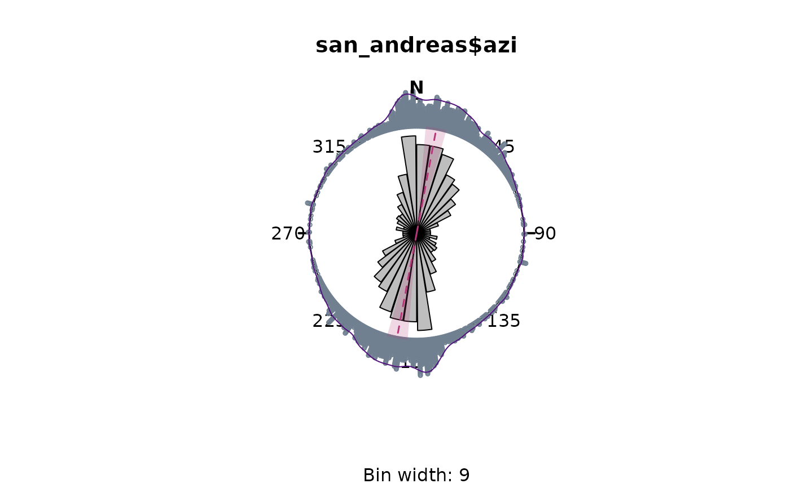

Plots multiples of a von Mises, wrapped Cauchy, and wrapped Normal density distribution in a circular plot
Usage
plot_density(
x,
bw = NULL,
kernel = c("vonmises", "wrappedcauchy", "wrappednormal"),
weights = NULL,
axial = TRUE,
n = 512L,
norm.density = TRUE,
kappa = NULL,
rho = NULL,
sd = NULL,
c = NULL,
fill = FALSE,
scale = 0,
shrink = 1,
add = TRUE,
main = NULL,
labels = TRUE,
at = seq(0, 360 - 45, 45),
cborder = TRUE,
grid = FALSE,
...
)Arguments
- x
Either an object of class
"density"or a numeric vector of angles (in degrees) from which the estimate is to be computed- bw, kappa, rho, sd, c
numeric. Smoothing bandwidth expressed as the concentration parameter \(\kappa\) for the von Mises distribution, \(\rho\) for the wrapped Cauchy distribution, or \(\sigma\) for the wrapped normal distribution. Small and large values for the von Mises and wrapped normal/Cauchy distribution, respectively, gives smooth density lines. If not specified, parameter will be estimated using
est.kappa()for the von Mises distribution, or set to \(p \exp(-1)\) and1for the wrapped Cauchy and wrapped Normal distribution (where \(p = 2\) whenaxial=TRUEand 1 otherwise), respectively.- kernel
character. The smoothing kernel to be used; one of
"vonmises"(the default),"wrappedcauchy","wrappednormal, for the von Mises, the wrapped Cauchy, and the wrapped Normal distribution.- weights
numeric. A vector of observation weights, of the same length as
x, to give individual observations weight in the density estimate. Should sum to 1; a warning is issued if it doesn't (unlesssubdensity = TRUE). Defaults to equal weight1/length(x)per observation, matchingstats::density().- axial
Logical. Whether data are uniaxial (
axial=FALSE) or biaxial (TRUE, the default).- n
integer. Number of equally spaced angles at which the density is to be estimated.
- norm.density
logical. Normalize the density?
- fill
logical. Whether to fill the density curve or draw just a line (the default)
- scale
numeric. radius of plotted circle. Default is
1.1.- shrink
numeric. parameter that controls the size of the plotted function. Default is
1.- add
logical. Add to existing plot? (
TRUEby default).- main
Character string specifying the title of the plot.
- labels
Either a logical value indicating whether to plot labels next to the tick marks, or a vector of labels for the tick marks.
- at
Optional vector of angles at which tick marks should be plotted. Set
at=numeric(0)to suppress tick marks.- cborder
logical. Border of rose plot.
- grid
logical. Whether a grid should be added.
- ...
Further graphical parameters may also be supplied as arguments.
See also
Other circular-plot:
plot_points(),
rose(),
rose_geom,
rose_stats()
Examples
# Filled von Mises kernel density curve inside the plot
plot_density(san_andreas$azi,
kappa = 100,
fill = TRUE, col = "#51127C80", border = "#51127CFF",
grid = TRUE,
add = FALSE
)
# Superimpose a wrapped Cauchy kernel distribution curve
plot_density(san_andreas$azi,
rho = 0.9, kernel = "wrappedcauchy",
fill = FALSE, col = "#FB8861FF",
add = TRUE
)
# Superimpose a wrapped Normal kernel distribution curve
plot_density(san_andreas$azi,
sd = 2, kernel = "wrappednormal",
fill = FALSE, col = "#E65164FF",
add = TRUE
)

# Superimpose a von Mises kernel density curve on a rose diagram:
rose(san_andreas$azi, grid = TRUE)
plot_density(san_andreas$azi,
bw = 100, col = "#51127CFF",
add = TRUE, lwd = 3
)

# Corona plot (density curve outside of a rose diagram plot):
w <- weighting(san_andreas$unc)
rose(san_andreas$azi, weights = w, dots = TRUE, stack = TRUE, dot_cex = 0.5, dot_pch = 21)
plot_density(san_andreas$azi, weights = w,
bw = 100,
scale = 1.1, shrink = 3, xpd = NA,
col = "#51127CFF"
)
